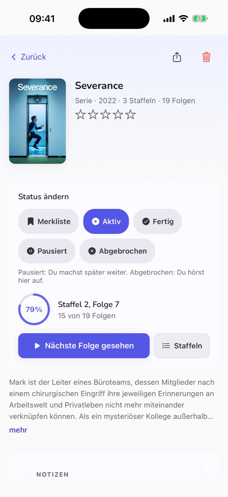

SerienSeries
Immer wissen, welche Folge dran ist. Always know which episode is next.
Ein Tipp auf „Nächste Folge gesehen“, und der Fortschritt der Staffel füllt sich mit. Neue Folgen deiner aktiven Serien stehen mit Datum auf dem Startbildschirm — auf Wunsch mit Erinnerung am Tag der Ausstrahlung. One tap on “Next episode watched” and the season’s progress fills in. New episodes of your active series show up on the home screen with their air date — with an optional reminder on the day.
